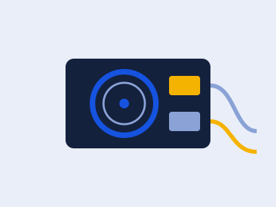

Cómo elegir la fuente de poder correcta

La fuente de poder es uno de los componentes más importantes y menos considerados al armar un PC. Elegir una con la potencia adecuada evita cuellos de botella y protege el resto de los componentes.
Como regla general, conviene sumar el consumo estimado de la tarjeta de video y el procesador, y dejar un margen de al menos un 20% adicional para futuras actualizaciones.
También vale la pena fijarse en el certificado de eficiencia (80 Plus Bronze, Gold, etc.) y en que la fuente sea modular si te importa el orden de los cables dentro del gabinete.